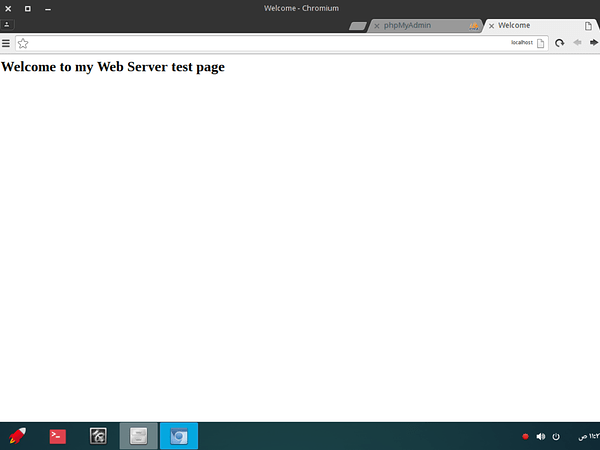
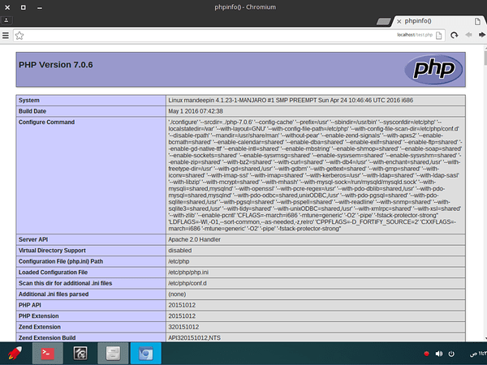
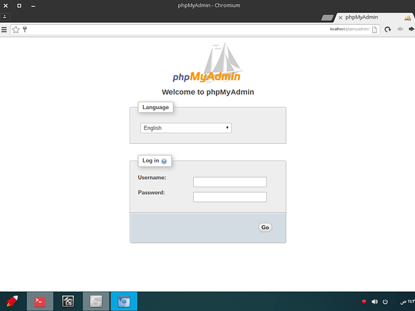
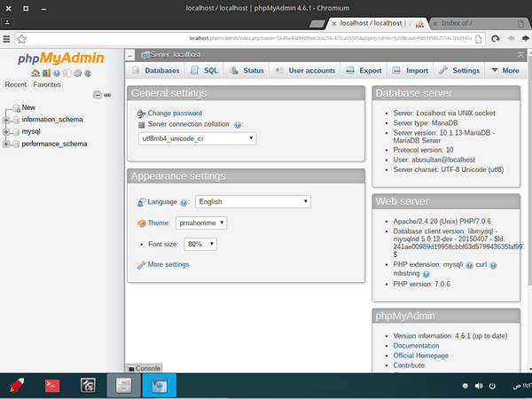

This tutorial walk you through installing and configuring Apache, MySQL, PHP (LAMP) 2016.
LAMP is the the acronym of Linux, Apache, MySQL/MariaDB, PHP/Perl/Pyhton.
Tested on Manjaro Deepin 16.03 x32 and Arch Linux 2016 x64 server
##1. Update your system
Run the following command as root user to update your Manjaro Linux:
sudo pacman -Syu
##2. Install Apache
After updating the system, install Apache web server using command:
sudo pacman -S apache
Edit /etc/httpd/conf/httpd.conf file,
sudo nano /etc/httpd/conf/httpd.conf
Search and comment out the following line if it is not already:
[...]
# LoadModule unique_id_module modules/mod_unique_id.so
[...]
Save an close the file.
Enable Apache service to start at boot and restart Apache service using commands:
sudo systemctl enable httpd
sudo systemctl restart httpd
You can verify whether Apache is running or not with command:
sudo systemctl status httpd
Sample output:
httpd.service - Apache Web Server
Loaded: loaded (/usr/lib/systemd/system/httpd.service; disabled; vendor
preset: disabled)
Active: active (running) since Tue 2016-02-16 13:00:18 IST; 7s ago
Main PID: 1067 (httpd)
Tasks: 82 (limit: 512)
CGroup: /system.slice/httpd.service
├─1067 /usr/bin/httpd -k start -DFOREGROUND
├─1070 /usr/bin/httpd -k start -DFOREGROUND
├─1071 /usr/bin/httpd -k start -DFOREGROUND
└─1072 /usr/bin/httpd -k start -DFOREGROUND
Feb 16 13:00:18 server systemd[1]: `Started Apache Web Server.`
Feb 16 13:00:18 server httpd[1067]: AH00558: httpd: Could not reliably
dete...ge
Hint: Some lines were ellipsized, use -l to show in full.
Apache server is ready to use.
Test Apache
Let us create a sample page in the Apache root directory , i.e /srv/http.
sudo nano /srv/http/index.html
Add the following lines:
<html>
<head>
<title>Welcome</title>
</head>
<body>
<h2>Welcome to my Web Server test page</h2>
</body>
</html>
Now, open your web browser and navigate to http://localhost or http://IP-address. You will be pleased with Apache server Test page.

##3. Install MariaDB
Run the following command to install MariaDB:
sudo pacman -S mysql
As you may know, MariaDB is now officially the default implementation of MySQL in Arch Linux since 2013. So, you will be asked whether to install MariaDB or Percona server, just hit enter and then type y and press enter again. The default selection i.e MariaDB will be installed on your Arch Linux.
[root@server ~]# pacman -S mysql
:: There are 2 providers available for mysql:
:: Repository extra
1) mariadb
:: Repository community
2) percona-server
Enter a number (default=1): `## Press Enter`
resolving dependencies...
looking for conflicting packages...
Packages (7) boost-libs-1.60.0-2 icu-56.1-2 jemalloc-4.0.4-1libmariadbclient-10.1.11-1 libxml2-2.9.3-1
mariadb-clients-10.1.11-1 mariadb-10.1.11-1
Total Download Size: 30.68 MiB
Total Installed Size: 218.10 MiB
:: Proceed with installation? [Y/n]
You need to initialize the MariaDB data directory prior to starting the service. To do so, run:
sudo mysql_install_db --user=mysql --basedir=/usr --datadir=/var/lib/mysql
Then issue the following command to enable and start MariaDB service.
sudo systemctl enable mysqld
sudo systemctl start mysqld
You can verify whether MariaDb is running or not using command:
sudo systemctl status mysqld
Sample output:
mysqld.service - MariaDB database server
Loaded: loaded (/usr/lib/systemd/system/mysqld.service; disabled;
vendor preset: disabled)
Active: active (running) since Tue 2016-02-16 13:19:50 IST; 44s ago
Process: 1406 ExecStartPost=/usr/bin/mysqld-post (code=exited,
status=0/SUCCESS)
Main PID: 1405 (mysqld)
Tasks: 26 (limit: 512)
CGroup: /system.slice/mysqld.service
└─1405 /usr/bin/mysqld --pid-file=/run/mysqld/mysqld.pid
Feb 16 13:19:49 server mysqld[1405]: 2016-02-16 13:19:49 139930931222400
[N...a.
Feb 16 13:19:49 server mysqld[1405]: 2016-02-16 13:19:49 139930931222400
[N...e.
Feb 16 13:19:49 server mysqld[1405]: 2016-02-16 13:19:49 139930931222400
[N...rt
Feb 16 13:19:49 server mysqld[1405]: 2016-02-16 13:19:49 139930931222400
[N...19
Feb 16 13:19:49 server mysqld[1405]: 2016-02-16 13:19:49 139930516817664
[N...ed
Feb 16 13:19:49 server mysqld[1405]: 2016-02-16 13:19:49 139930931222400
[N...d.
Feb 16 13:19:49 server mysqld[1405]: 2016-02-16 13:19:49 139930931222400
[N...'.
Feb 16 13:19:49 server mysqld[1405]: 2016-02-16 13:19:49 139930931222400
[N...s.
Feb 16 13:19:49 server mysqld[1405]: Version: '10.1.11-MariaDB-log'
socket...er
Feb 16 13:19:50 server systemd[1]: `Started MariaDB database server.`
Hint: Some lines were ellipsized, use -l to show in full.
Setup MySQL/MariaDB root user password
As you may know, It is recommended to setup a password for database root user.
Run the following command to setup MariaDB root user password:
sudo mysql_secure_installation
Sample output:
NOTE: RUNNING ALL PARTS OF THIS SCRIPT IS RECOMMENDED FOR ALL MariaDB
SERVERS IN PRODUCTION USE! PLEASE READ EACH STEP CAREFULLY!
In order to log into MariaDB to secure it, we'll need the current
password for the root user. If you've just installed MariaDB, and
you haven't set the root password yet, the password will be blank,
so you should just press enter here.
Enter current password for root (enter for none): `## Press Enter`
OK, successfully used password, moving on...
Setting the root password ensures that nobody can log into the MariaDB
root user without the proper authorisation.
Set root password? [Y/n] `## Press Enter`
New password: `## Enter password`
Re-enter new password: `## Re-enter password`
Password updated successfully!
Reloading privilege tables..
... Success!
By default, a MariaDB installation has an anonymous user, allowing anyone
to log into MariaDB without having to have a user account created for
them. This is intended only for testing, and to make the installation
go a bit smoother. You should remove them before moving into a
production environment.
Remove anonymous users? [Y/n] `## Press Enter`
... Success!
Normally, root should only be allowed to connect from 'localhost'. This
ensures that someone cannot guess at the root password from the network.
Disallow root login remotely? [Y/n] `## Press Enter`
... Success!
By default, MariaDB comes with a database named 'test' that anyone can
access. This is also intended only for testing, and should be removed
before moving into a production environment.
Remove test database and access to it? [Y/n] `## Press Enter`
- Dropping test database...
... Success!
- Removing privileges on test database...
... Success!
Reloading the privilege tables will ensure that all changes made so far
will take effect immediately.
Reload privilege tables now? [Y/n] `## Press Enter`
... Success!
Cleaning up...
All done! If you've completed all of the above steps, your MariaDB
installation should now be secure.
Thanks for using MariaDB!
MariaDB has been installed and ready to use.
###4. Install PHP
To install PHP run:
sudo pacman -S php php-apache
After PHP is installed, we need to configure Apache PHP module.
To do so, edit /etc/httpd/conf/httpd.conf file,
sudo nano /etc/httpd/conf/httpd.conf
Find the following line and comment it out:
[...]
#LoadModule mpm_event_module modules/mod_mpm_event.so
[...]
Uncomment or add the line:
LoadModule mpm_prefork_module modules/mod_mpm_prefork.so
Then, add the following lines at the bottom:
LoadModule php7_module modules/libphp7.so
AddHandler php7-script php
Include conf/extra/php7_module.conf
Save and close the file.
Test PHP
Now create a test.php file in the Apache root directory.
sudo nano /srv/http/test.php
Add the following lines:
<?php
phpinfo();
Restart httpd service.
sudo systemctl restart httpd
Open up your web browser and navigate to http://ip-address/test.php. You should the screen like
below.

2.png1279×948 357 KB
###5. Install phpMyAdmin
phpMyAdmin is a graphical MySQL/MariaDB administration tool that can be used to create, edit and delete databases.
To install it, run:
sudo pacman -S phpmyadmin
After installing, edit php.ini file,
sudo nano /etc/php/php.ini
Make sure the following lines are uncommented.
[...]
extension=bz2.so
extension=mysqli.so
[...]
Save and close the file.
Next, create configuration file for phpMyAdmin,
sudo nano /etc/httpd/conf/extra/phpmyadmin.conf
Add the following lines:
Alias /phpmyadmin "/usr/share/webapps/phpMyAdmin"
<Directory "/usr/share/webapps/phpMyAdmin">
DirectoryIndex index.php
AllowOverride All
Options FollowSymlinks
Require all granted
</Directory>
Then, open Apache configuration file,
sudo nano /etc/httpd/conf/httpd.conf
Add the following line at the end:
Include conf/extra/phpmyadmin.conf
Save and close the file.
Restart httpd service.
sudo systemctl restart httpd
Test phpMyAdmin
Open your browser and navigate to http://IP-Address/phpmyadmin.

Enter the MySQL/MariaDB root username and it’s password.
Here it is how my phpMyAdmin web console looks like.

4.png1278×951 267 KB
You might see an error that says “The configuration file now needs a secret passphrase
(blowfish_secret)” at the bottom of phpMyAdmin dashboard.
To get rid of this error, edit /etc/webapps/phpmyadmin/config.inc.php file,
sudo nano /etc/webapps/phpmyadmin/config.inc.php
Find the following line and specify bluefish secret passphrase:
$cfg['blowfish_secret'] = '`MyP@$S`'; /* YOU MUST FILL IN THIS FOR COOKIE AUTH!$ /**
Save and close the file. Restart Apache service.
sudo systemctl restart httpd
The error will be gone now.
That’s all for now. At this stage, you have a working LAMP stack, and is ready to host your websites.
If you want to use Nginx instead of Apache web server, refer the following article.
[ I'll try to test it on Manjaro as soon as possible ]
Thanks for reading!
Good Luck!!
{kind=link}
{kind=link}
{kind=link}
{kind=link}